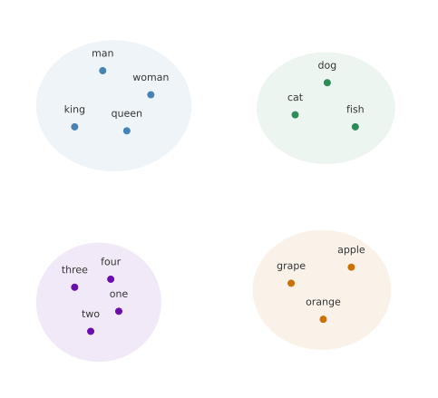
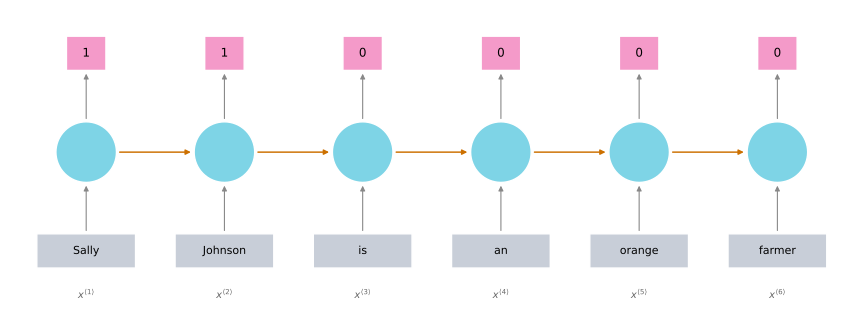
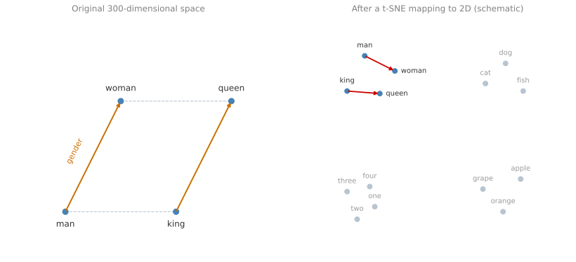
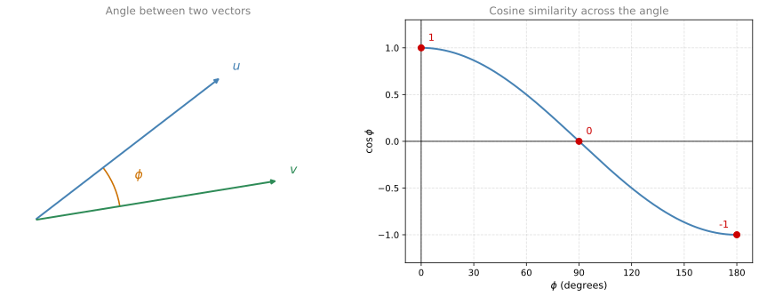
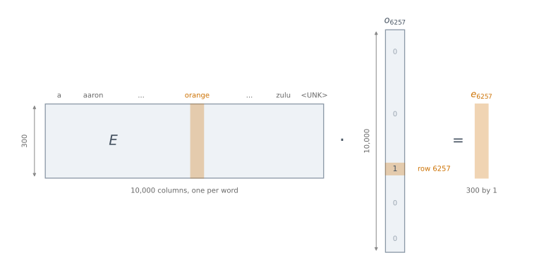

Introduction to Word Embeddings
deep-learning
sequence-models
nlp
word-embeddings
transfer-learning
cosine-similarity
Why one-hot vectors cannot generalize across words, how featurized word embeddings fix that, and how analogy reasoning and the embedding matrix work.
The previous pages built up RNNs, GRUs, LSTMs, and their bidirectional and deep variants. Many of those ideas can now be applied to natural language processing, which is one of the areas of AI most transformed by deep learning. The key idea on this page is the word embedding, a way of representing words that lets an algorithm notice on its own that man is to woman as king is to queen. Word embeddings also let you build NLP applications with relatively small labeled training sets.
Word Representation
So far words have been represented using a vocabulary of, say, 10,000 words, and each word has been written as a one-hot vector. If man is word number 5391 in the dictionary, then it is represented by a vector with a 1 in position 5391 and zeros everywhere else. The notation for that vector is \(o_{5391}\), where \(o\) stands for one-hot. If woman is word number 9853, it is represented by \(o_{9853}\), which has a 1 in position 9853 and zeros elsewhere. The words king (4914), queen (7157), apple (456), and orange (6257) are represented the same way.
One of the weaknesses of this representation is that it treats each word as a thing unto itself, and it does not let an algorithm generalize across words. Suppose a language model has learned that when it sees
I want a glass of orange ______
the next word is very likely juice. Even so, if that same model now sees
I want a glass of apple ______
then as far as it knows, the relationship between apple and orange is no closer than the relationship between any other pair of words, such as man and orange or queen and orange. So it is not easy for the learning algorithm to generalize from knowing that orange juice is a popular phrase to guessing that apple juice might be one too.
The reason is arithmetic. The inner product between any two different one-hot vectors is zero, because wherever one vector has its single 1, the other has a 0. Take king and queen, and the inner product is zero. Take apple and orange, and the inner product is zero as well. The Euclidean distance between any pair of these vectors is also the same for every pair. Nothing in the representation says that apple and orange are more similar to each other than king and orange are.
So it would be much better to learn a featurized representation for each word instead. For every word in the dictionary, learn a set of features and a value for each of them.
Start with gender. Let gender run from \(-1\) for male to \(+1\) for female. Then the gender value for man might be \(-1\) and for woman \(+1\). Learning these values might give \(-0.95\) for king and \(+0.97\) for queen, while apple and orange come out essentially genderless. Another feature could be how royal these things are. The words man and woman are not really royal, so their values sit close to zero, while king and queen are highly royal, and apple and orange are not royal at all. Age is another. The words man and woman do not say much about age, so those values are close to zero, while kings and queens are almost always adults, and apple and orange are neutral with respect to age. A fourth feature could ask whether the word names a food. A man is not a food, a woman is not a food, and neither are kings and queens, but apples and oranges are.
| man (5391) | woman (9853) | king (4914) | queen (7157) | apple (456) | orange (6257) | |
|---|---|---|---|---|---|---|
| Gender | -1 | 1 | -0.95 | 0.97 | 0.00 | 0.01 |
| Royal | 0.01 | 0.02 | 0.93 | 0.95 | -0.01 | 0.00 |
| Age | 0.03 | 0.02 | 0.70 | 0.69 | 0.03 | -0.02 |
| Food | 0.09 | 0.01 | 0.02 | 0.01 | 0.95 | 0.97 |
There can be many other features as well, ranging from size, to cost, to whether the thing is alive, to whether the word is an action, a noun, a verb, or something else. You can imagine coming up with a great many features. For the sake of illustration, say there are 300 different features. That turns each column of the table above into a list of 300 numbers, a 300-dimensional vector representing that word. The notation \(e_{5391}\) denotes that vector for man, and \(e_{9853}\) denotes the 300-dimensional vector for woman.
Now look at what happens to apple and orange under this representation. Their columns are quite similar. Some features will differ, because the color of an orange is not the color of an apple, and the taste is not the same, but by and large a lot of the features of apple and orange take on very similar values. That increases the odds that a learning algorithm which has figured out that orange juice is a thing will also quickly figure out that apple juice is a thing. The representation lets it generalize across different words.
Once each word has a 300-dimensional vector, one popular thing to do is to embed that 300-dimensional data into a two-dimensional space so that it can be visualized. A common algorithm for this is t-SNE, due to van der Maaten and Hinton (2008).
Words like man and woman get grouped together, king and queen get grouped together, animals get grouped together, fruits end up close to each other, and numbers like one, two, three, and four sit near each other as well. A word embedding algorithm learns similar features for concepts that feel like they ought to be related, and those concepts end up mapped to similar feature vectors.
The term embedding comes from the geometry. Think of a 300-dimensional space. Every word, such as orange, has a 300-dimensional feature vector, so the word orange gets embedded at a point in that space, and the word apple gets embedded at a different point. To visualize the result, an algorithm like t-SNE maps those points down to a much lower-dimensional space where the data can actually be plotted.
One honest caveat. The features that a learning algorithm ends up with will not have an easy interpretation like component one is gender, component two is royal, and component three is age. Exactly what each coordinate represents is harder to figure out. What matters is that the featurized representation still lets an algorithm work out that apple and orange are more similar than king and orange.
Review Questions
1. Why can a model trained on one-hot vectors not transfer what it knows about orange juice to apple juice?
Answer
Because a one-hot vector encodes only the position of a word in the dictionary, and nothing about its meaning. The inner product of any two different one-hot vectors is zero, and the Euclidean distance between any pair is identical. So apple and orange look exactly as unrelated to each other as apple and queen do, and there is no signal for the model to generalize along.
1. What is the difference between \(o_{6257}\) and \(e_{6257}\)?
Answer
Both refer to the word orange, which sits at position 6257 in a 10,000-word vocabulary. \(o_{6257}\) is the one-hot vector, 10,000-dimensional, with a single 1 at position 6257 and zeros everywhere else. \(e_{6257}\) is the embedding, a much shorter dense vector (300-dimensional in the running example) whose entries are learned feature values.
1. In the featurized table, why do the columns for apple and orange look so much alike?
Answer
Because most of the features that describe them agree. Both are genderless, neither is royal, both are age-neutral, and both are strongly food. A few features would differ, such as color and taste, but the bulk of the 300 coordinates take on very similar values. That similarity is exactly what lets a model generalize from orange juice to apple juice.
1. What is t-SNE?
A linear transformation that allows us to solve analogies on word vectors
A non-linear dimensionality reduction technique
An open-source sequence modeling library
A supervised learning algorithm for learning word embeddings
Answer
b. t-SNE is purely a visualization step. It takes the 300-dimensional embeddings that some other algorithm has already learned and maps them down to two dimensions so that a human can look at them. It is non-linear, and it plays no part in learning the embeddings, which rules out options a and d.
1. True or false. Suppose you learn a word embedding for a vocabulary of 60,000 words. Then the embedding vectors could be 60,000 dimensional, so as to capture the full range of variation and meaning in those words.
Answer
False is the keyed answer, though the wording repays a careful reading. Taken permissively, “could” is defensible, since nothing stops you from training a 60,000-dimensional dense embedding, and it would still carry the meaningful geometry a one-hot vector lacks. What the question is really testing is the reason attached to the claim, the idea that you need one dimension per vocabulary word in order to capture the full range of meaning. That part is false. Word vector dimensions are usually far smaller than the vocabulary, which is why the running example pairs a 10,000-word vocabulary with a 300-dimensional embedding. A 60,000-dimensional vector for a 60,000-word vocabulary would be exactly as long as the one-hot vector it was meant to replace, throwing away the compactness that made the featurized representation attractive.
Using Word Embeddings
The next question is how to take these representations and plug them into an NLP application. Continue with the named entity recognition example, where the task is to detect people’s names. Given the sentence Sally Johnson is an orange farmer, the model should work out that Sally Johnson is a person’s name and output a 1 for those two words.
On a small screen, scroll horizontally to inspect all six time steps.

One clue that Sally Johnson has to be a person rather than, say, the name of a corporation is that an orange farmer is a person. Previously the inputs \(x^{\langle 1 \rangle}\), \(x^{\langle 2 \rangle}\), and so on were one-hot vectors. Now use the embedding vectors instead. After training a model that takes word embeddings as its inputs, a new sentence such as Robert Lin is an apple farmer becomes easy, because knowing that apple and orange are very similar makes it straightforward for the algorithm to generalize and figure out that Robert Lin is also a person’s name.
The more interesting case is a test sentence with much less common words. Suppose the test set contains Robert Lin is a durian cultivator. A durian is a rare type of fruit, popular in Singapore and a few other countries. With a small labeled training set for the named entity recognition task, you might never have seen the word durian or the word cultivator at all during training. But if the word embedding tells you that a durian is a fruit, so it is like an orange, and that a cultivator is someone who cultivates, so it is like a farmer, then the model can still generalize from having seen an orange farmer to knowing that a durian cultivator is probably a person too.
The reason word embeddings can do this is the data they are learned from. Algorithms for learning word embeddings can examine very large text corpora found off the internet, perhaps a billion words, and up to 100 billion words would be quite reasonable. Those are very large training sets of unlabeled text. By examining enormous amounts of unlabeled text, which can be downloaded more or less for free, an algorithm can work out that orange and durian are similar, and that farmer and cultivator are similar, and learn embeddings that group them together.
Transfer Learning with Embeddings
Having discovered that orange and durian are both fruits by reading massive amounts of internet text, you can take that word embedding and apply it to a named entity recognition task with a much smaller training set, maybe 100,000 words or even fewer. This is transfer learning, where knowledge learned from huge amounts of free unlabeled text is carried over to a task with a relatively small labeled training set. Transfer learning with word embeddings takes three steps.
- Learn word embeddings from a very large text corpus, roughly 1 to 100 billion words. Alternatively, download pre-trained word embeddings online, several of which are published under permissive licenses.
- Transfer the embedding to the new task, where the labeled training set is much smaller, say 100,000 words. Rather than a 10,000-dimensional one-hot vector per word, the model now sees a 300-dimensional dense vector. The one-hot vector is sparse and the embedding is dense, and the embedding is far shorter.
- Optionally, as you train on the new task, continue to fine tune the word embeddings with the new data. In practice this is worth doing only when the new task has a fairly large data set. If the labeled data set for step 2 is small, fine tuning the embeddings is usually not worth the bother.
Word embeddings make the biggest difference when the task being carried out has a relatively small training set. They have proven useful for many standard NLP tasks, including named entity recognition, text summarization, co-reference resolution, and parsing. They have been less useful for language modeling and machine translation, especially when there is a lot of data dedicated to that specific task. This matches what transfer learning does in general. Transferring from task A to task B is most useful when there is a ton of data for A and a relatively small data set for B, which is true for a lot of NLP tasks and less true for some language modeling and machine translation settings.
One note on the figure above. It was drawn as a unidirectional RNN for simplicity. A real named entity recognition system should use a bidirectional RNN instead.
Relation to Face Encoding
Word embeddings have an interesting relationship to the face encoding ideas from the convolutional networks course. In face recognition, a Siamese network architecture learns a 128-dimensional representation for different faces, and those encodings are then compared to figure out whether two pictures show the same person.
The words encoding and embedding mean fairly similar things, and the face recognition literature uses encoding to refer to those vectors \(f(x^{(i)})\) and \(f(x^{(j)})\). The terms are used somewhat interchangeably.
There is one real difference, and it is about how the algorithms are used rather than about the terminology. For face recognition, the goal is a neural network that can take any face picture as input, even a picture it has never seen before, and compute an encoding for that new picture. For word embeddings, the vocabulary is fixed at, say, 10,000 words, and what gets learned is a fixed vector \(e_1\) through \(e_{10000}\), one embedding per word in the vocabulary. Face recognition faces an unlimited sea of pictures it could encounter in the future, while natural language processing has a fixed vocabulary and declares everything outside it an unknown word.
Review Questions
1. The training set never contained the words durian or cultivator. How can the model still label Robert Lin as a person in Robert Lin is a durian cultivator?
Answer
The word embedding was not learned from the labeled training set. It was learned from a very large unlabeled corpus, perhaps 1 to 100 billion words of internet text, where durian and cultivator do appear. That corpus places \(e_{\text{durian}}\) near \(e_{\text{orange}}\) and \(e_{\text{cultivator}}\) near \(e_{\text{farmer}}\). The named entity model saw an orange farmer during training, and the similar embeddings carry that pattern over.
1. When is step 3, fine tuning the embeddings on the new task, worth doing?
Answer
Only when the new task has a fairly large labeled data set. With a small data set there is not enough signal to improve embeddings that were learned from billions of words, so the usual choice is to leave them fixed.
1. Why do word embeddings help less with machine translation than with named entity recognition?
Answer
Because transfer learning pays off when task A has far more data than task B. Named entity recognition typically has a small labeled set, so a billion-word corpus adds a great deal. Machine translation and language modeling projects often have very large dedicated data sets of their own, so there is less for a transferred embedding to add.
1. What is the real difference between a face encoding and a word embedding?
Face encodings are learned and word embeddings are hand-designed
A face network encodes any input image, including one never seen before, while a word embedding is a fixed table covering only the vocabulary
Face encodings are dense and word embeddings are sparse
There is no difference beyond the choice of word
Answer
b. The terms encoding and embedding are used interchangeably, so the difference is not in the vocabulary. A Siamese face network is a function that computes an encoding for an arbitrary new picture, which it must be, because there is an unlimited sea of faces it could meet. A word embedding is a fixed set of vectors \(e_1\) through \(e_{10000}\), one per vocabulary entry, and anything outside that list becomes the unknown word token.
1. You have trained word embeddings on a text dataset of \(t_1\) words, and you have a separate labeled dataset of \(t_2\) words for some language task. Under which circumstance would you expect the word embeddings to help?
When \(t_1\) is smaller than \(t_2\)
When \(t_1\) is equal to \(t_2\)
When \(t_1\) is larger than \(t_2\)
Answer
c. Transfer learning is most useful when the source task has far more data than the target task, so the embedding has the most to add when the unlabeled corpus \(t_1\) is much larger than the labeled set \(t_2\). As \(t_2\) grows toward \(t_1\), the labeled data increasingly covers the same ground on its own and there is less left for the embedding to contribute.
Properties of Word Embeddings
One of the most fascinating properties of word embeddings is that they can help with analogy reasoning. Building an analogy reasoning system is probably not the most important NLP application on its own, but it conveys a strong sense of what word embeddings are actually doing.
Pose the question, man is to woman as king is to what? Most people say queen. The question is whether an algorithm can work that out automatically.
Here is how. Return to the featurized table from earlier, and for this example pretend the embeddings are only four-dimensional rather than the 50 to 1,000 dimensions that would be more typical. Write \(e_{\text{man}}\) for the embedding of man, which is the same vector as \(e_{5391}\), and similarly for the other three words. Now subtract.
\[ e_{\text{man}} - e_{\text{woman}} = \begin{bmatrix} -1 \\ 0.01 \\ 0.03 \\ 0.09 \end{bmatrix} - \begin{bmatrix} 1 \\ 0.02 \\ 0.02 \\ 0.01 \end{bmatrix} = \begin{bmatrix} -2 \\ -0.01 \\ 0.01 \\ 0.08 \end{bmatrix} \approx \begin{bmatrix} -2 \\ 0 \\ 0 \\ 0 \end{bmatrix} \]
\[ e_{\text{king}} - e_{\text{queen}} = \begin{bmatrix} -0.95 \\ 0.93 \\ 0.70 \\ 0.02 \end{bmatrix} - \begin{bmatrix} 0.97 \\ 0.95 \\ 0.69 \\ 0.01 \end{bmatrix} = \begin{bmatrix} -1.92 \\ -0.02 \\ 0.01 \\ 0.01 \end{bmatrix} \approx \begin{bmatrix} -2 \\ 0 \\ 0 \\ 0 \end{bmatrix} \]
Both differences come out to roughly the same vector. Gender contributes about \(-2\) in each case, royalty cancels because kings and queens are about equally royal, and the age and food differences are close to zero. What this captures is that the main difference between man and woman is gender, and the main difference between king and queen, as represented by these vectors, is also gender.
So one way to carry out analogy reasoning is to compute \(e_{\text{man}} - e_{\text{woman}}\), then look for a word \(w\) whose embedding makes
\[e_{\text{man}} - e_{\text{woman}} \approx e_{\text{king}} - e_{w}\]
hold as closely as possible. It turns out that when queen is the word plugged in, the left side really is close to the right side. This result was first pointed out by Mikolov et al. (2013), and it has been one of the most remarkable and influential findings about word embeddings.
Geometrically, the word embeddings live in a 300-dimensional space. The word man is a point in that space, woman is another point, king is a third, and queen is a fourth. The vector difference between man and woman is very similar to the vector difference between king and queen, and that arrow is essentially the direction that represents a difference in gender. The four points therefore form a parallelogram.

To turn this into an algorithm, find the word \(w\) that makes \(e_{\text{man}} - e_{\text{woman}} \approx e_{\text{king}} - e_{w}\) hold. Move \(e_w\) to one side and the other three terms to the other, and the problem becomes finding the word whose embedding is most similar to a particular target vector.
\[w = \arg\max_{w}\ \text{sim}\!\left(e_{w},\ e_{\text{king}} - e_{\text{man}} + e_{\text{woman}}\right)\]
Given some appropriate similarity function, maximizing it over the whole vocabulary should pick out queen, and the remarkable thing is that this actually works. Depending on the details of the task, research papers report anywhere from about 30% to 75% accuracy on analogy tasks like these, where an attempt counts as correct only if the algorithm guesses the exact right word.
One clarification about the plots above. As noted earlier, t-SNE takes 300-dimensional data and maps it into two dimensions in a very non-linear way. After that mapping, you should not expect the parallelogram relationships to survive. It is in the original 300-dimensional space that these relationships can be relied on. A parallelogram may happen to hold after t-SNE, but because the mapping is non-linear, most of them will be broken, and it is not something to count on.
Cosine Similarity
The similarity function most commonly used here is cosine similarity. For two vectors \(u\) and \(v\) it is defined as
\[\text{sim}(u, v) = \frac{u^{T} v}{\lVert u \rVert_2 \, \lVert v \rVert_2}\]
Ignoring the denominator for a moment, the numerator is just the inner product between \(u\) and \(v\), so if \(u\) and \(v\) are very similar, their inner product tends to be large. The reason for the name is that the whole expression is the cosine of the angle \(\phi\) between the two vectors.

If the angle between the two vectors is 0, the cosine similarity is 1. If the angle is 90 degrees, the cosine similarity is 0. If they point in completely opposite directions, at 180 degrees, it comes out to \(-1\). That is where the name comes from, and it works quite well for analogy reasoning tasks.
You could also use squared Euclidean distance, \(\lVert u - v \rVert^{2}\), instead. Technically that is a measure of dissimilarity rather than similarity, so you would take its negative, and it works reasonably well too, although cosine similarity is used a bit more often. The main difference between the two is how they normalize the lengths of \(u\) and \(v\).
Generality of Analogies
One of the remarkable results about word embeddings is how general the analogy relationships they learn turn out to be.
| Analogy | Relationship captured |
|---|---|
| Man is to Woman as Boy is to Girl | Gender |
| Ottawa is to Canada as Nairobi is to Kenya | Capital city to country |
| Big is to Bigger as Tall is to Taller | Comparative form |
| Yen is to Japan as Ruble is to Russia | Currency to country |
All of these can be learned just by running a word embedding algorithm over a large text corpus. Nobody supplies the categories, and the algorithm spots the patterns by itself.
Review Questions
1. Why is \(e_{\text{man}} - e_{\text{woman}}\) approximately equal to \(e_{\text{king}} - e_{\text{queen}}\)?
Answer
Because the only feature that differs substantially within each pair is gender. Royalty is about equal within each pair, so it cancels, and so do age and food. Subtracting leaves roughly \([-2, 0, 0, 0]^{T}\) in both cases, which is the direction that encodes a change in gender.
1. Starting from \(e_{\text{man}} - e_{\text{woman}} \approx e_{\text{king}} - e_{w}\), derive the expression that is maximized to find \(w\).
Answer
Move \(e_w\) to the left side and the other three terms to the right, which gives \(e_{w} \approx e_{\text{king}} - e_{\text{man}} + e_{\text{woman}}\). The word is then whichever vocabulary entry has the embedding closest to that target vector. \[w = \arg\max_{w}\ \text{sim}\!\left(e_{w},\ e_{\text{king}} - e_{\text{man}} + e_{\text{woman}}\right)\]
1. A t-SNE plot of your embeddings shows man, woman, king, and queen but the four do not form a parallelogram. Is something wrong with the embeddings?
Answer
No. t-SNE maps 300 dimensions down to 2 in a highly non-linear way, and that mapping does not preserve parallelogram relationships. Most of them will be broken by the projection. The relationship should be checked in the original 300-dimensional space, not on the picture.
1. Two embeddings sit at 90 degrees to each other. What is their cosine similarity, and what does that say about them?
1, they are the same word
0, they are unrelated as far as the embedding is concerned
-1, they are opposites
It cannot be determined without the vector lengths
Answer
b. The cosine of 90 degrees is 0, so the similarity is 0 and the two words carry no shared direction in the embedding space. Option d is wrong because the denominator \(\lVert u \rVert_2 \lVert v \rVert_2\) divides the lengths out, which is exactly the point of normalizing.
1. Which of these equations should hold for a good word embedding? Select all that apply.
\(e_{\text{man}} - e_{\text{aunt}} \approx e_{\text{woman}} - e_{\text{uncle}}\)
\(e_{\text{man}} - e_{\text{woman}} \approx e_{\text{aunt}} - e_{\text{uncle}}\)
\(e_{\text{man}} - e_{\text{uncle}} \approx e_{\text{woman}} - e_{\text{aunt}}\)
\(e_{\text{man}} - e_{\text{woman}} \approx e_{\text{uncle}} - e_{\text{aunt}}\)
Answer
c and d. The analogy is man is to woman as uncle is to aunt, so both sides of a correct equation must run in the same direction. Option d states it directly, male minus female on each side. Option c is the same equation rearranged, moving \(e_{\text{uncle}}\) to the left and \(e_{\text{woman}}\) to the right, which is the other pair of opposite sides of the same parallelogram.
Options a and b both cross the genders. Option b keeps male minus female on the left but flips to female minus male on the right, so the two differences point in opposite directions. Option a pairs man with aunt and woman with uncle, which mixes a gender difference with a family-relation difference on both sides.
Embedding Matrix
Now formalize the problem of learning a good word embedding. When you implement an algorithm to learn a word embedding, what you end up learning is an embedding matrix.
Take the usual 10,000-word vocabulary, holding a, aaron, on through orange, on to zulu, plus an unknown word token. What gets learned is an embedding matrix \(E\), which is 300 by 10,000 for a 10,000-word vocabulary, or 300 by 10,001 if the unknown word token counts as one extra entry. The columns of this matrix are the embeddings for the different words in the vocabulary.
The word orange is number 6257 in the vocabulary, so \(o_{6257}\) is the one-hot vector with zeros everywhere and a 1 in position 6257. That is a 10,000-dimensional vector with a 1 in just one place.

Multiply \(E\) by \(o_{6257}\) and the result is a 300-dimensional vector, because \(E\) is \(300 \times 10{,}000\) and \(o_{6257}\) is \(10{,}000 \times 1\), so the product has shape \(300 \times 1\).
Work out the first element of that vector. It is the first row of \(E\) multiplied by \(o_{6257}\). Every element of \(o_{6257}\) is zero except element 6257, so the sum is zero times the first entry of the row, plus zero times the second, and so on, plus 1 times the entry in column 6257, plus zero times everything after it. The result is whatever sits in row 1 under the orange column. For the second element, take the second row of \(E\) and repeat, and again every term drops out except the entry in column 6257. Continue down all 300 rows and the whole orange column has been selected.
\[E \cdot o_{6257} = e_{6257}\]
More generally, for any word \(j\) in the vocabulary, \(E \cdot o_j = e_j\), the 300-dimensional embedding vector for word \(j\).
NoteDo not actually implement it as a matrix multiply
Writing the relationship as \(E \cdot o_j\) is the clearest way to see why the column comes out, but it is a wasteful way to compute it. Multiplying a \(300 \times 10{,}000\) matrix by a vector that is zero in 9,999 of its 10,000 positions throws away almost all of the arithmetic it performs. In practice, use a specialized function that looks column \(j\) up directly, which is what a deep learning framework’s embedding layer does.
The remaining question is where \(E\) comes from, which is a matter of choosing an algorithm to learn it.
Review Questions
1. What are the shapes of \(E\), \(o_j\), and \(e_j\) for a 10,000-word vocabulary with 300-dimensional embeddings?
Answer
\(E\) is \(300 \times 10{,}000\), one column per word. \(o_j\) is \(10{,}000 \times 1\), a one-hot column vector. Their product \(e_j\) is \(300 \times 1\), which is the embedding of word \(j\). Adding an unknown word token makes \(E\) \(300 \times 10{,}001\) and \(o_j\) \(10{,}001 \times 1\), and \(e_j\) keeps its shape.
1. Explain why \(E \cdot o_{6257}\) picks out the orange column rather than mixing several columns together.
Answer
Each element of the product is one row of \(E\) dotted with \(o_{6257}\). That dot product multiplies every entry of the row by the matching entry of \(o_{6257}\), and all of those entries are zero except the one at position 6257, which is 1. So every term vanishes except the entry in column 6257. Repeating this for all 300 rows reads out column 6257 exactly, with no contribution from any other column.
1. Let \(A\) be an embedding matrix, and let \(o_{4567}\) be a one-hot vector corresponding to word 4567. To get the embedding of word 4567, why not just call A * o_4567 in Python?
This does not handle unknown words (
<UNK>)None of the answers are correct, calling the Python snippet as described above is fine
The correct formula is \(A^{T} o_{4567}\)
It is computationally wasteful
Answer
d. Out of 10,000 multiplications per row, 9,999 involve a zero and contribute nothing, so nearly all the arithmetic is thrown away. A dedicated lookup reads column 4567 straight out of the matrix instead.
The other options fail for separate reasons. Option a is wrong because the unknown word token has its own column in \(A\) just like every other vocabulary entry, so the product handles it no differently. Option b is wrong because the call is not fine. Beyond the waste, * is elementwise multiplication in NumPy rather than a matrix product, so the snippet does not even return a 300-dimensional embedding. Option c is wrong on shapes. With \(A\) of shape \(300 \times 10{,}000\) and \(o_{4567}\) of shape \(10{,}000 \times 1\), the product \(A \, o_{4567}\) already conforms, while \(A^{T} o_{4567}\) would try to multiply a \(10{,}000 \times 300\) matrix by a \(10{,}000 \times 1\) vector and is undefined.
References
- Mikolov, T., Yih, W., & Zweig, G. (2013). Linguistic regularities in continuous space word representations. In Proceedings of the 2013 Conference of the North American Chapter of the Association for Computational Linguistics: Human Language Technologies (pp. 746-751). Association for Computational Linguistics. https://aclanthology.org/N13-1090/
- van der Maaten, L., & Hinton, G. (2008). Visualizing data using t-SNE. Journal of Machine Learning Research, 9(86), 2579-2605. https://www.jmlr.org/papers/v9/vandermaaten08a.html